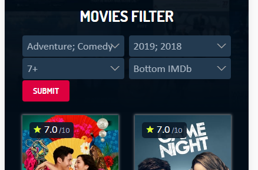

Complete list of filters can be found here. https://lookmovie.ag/web-api/v1/movies
For example, such filter preset like on this image

will have this url:
Response:
{
pagination:{
per_page:40,
current_page:1,
total_pages:3,
next_page:"http://lookmovie.ag/web-api/v1/movies/list?p=2&r=7&g=adventure%2Ccomedy&y=2018%2C2019&so=imdb_rating-4",
prev_page:"http://lookmovie.ag/web-api/v1/movies/list?p=1&r=7&g=adventure%2Ccomedy&y=2018%2C2019&so=imdb_rating-4"
},
items:{
total:108,
per_page:40,
collection:[
{
id_movie:"49665",
imdb_rating:"7",
slug:"3104988-crazy-rich-asians-2018",
shard_url:"/storage4/",
year:"2018",
flag_quality:"8",
release_date:"2018-08-15 00:00:00",
title:"Crazy Rich Asians",
description:"An American-born Chinese economics professor accompanies her boyfriend to Singapore for his best friend's wedding, only to get thrust into the lives of Asia's rich and famous.",
duration:"121",
views:"3892",
poster:"/1XxL4LJ5WHdrcYcihEZUCgNCpAW.jpg",
date_added:"2019-01-26 02:17:20"
}
]
}
}
pagination - can use this get links to next_page and prev_page.
items.collection.[0].poster - movie poster. To create movie poster you should prepend url to poster. example: "https://image.tmdb.org/t/p/w342/oKYF5HmimhnGJ3x8G20WHeNpKkT.jpg". Not all movies have poster. If no poster, then field is empty.
items.collection[0].flag_quality - icon showing movie quality, if flag_quality < 7 then its LQ(red icon) OR if flag_quality > 7 its HD and icon is green
Other fields self-explanatory.